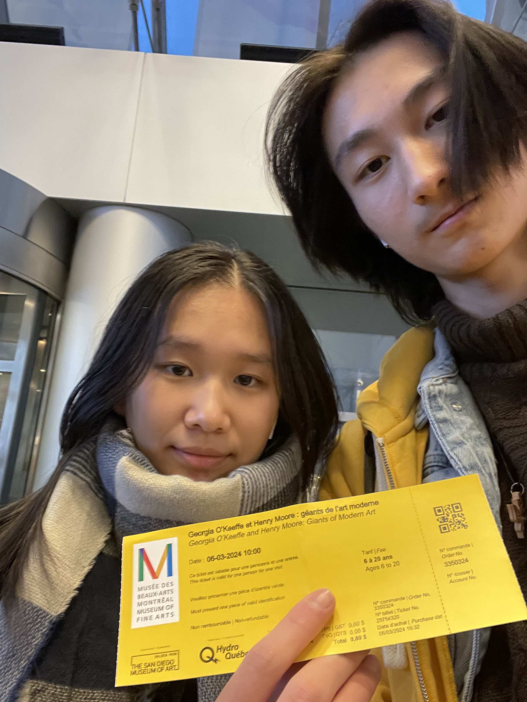

INFORMATIONS SUR L'EXPOSITION
 lien de l'image
lien de l'image
Lieu de l'exposition:
Musée des beaux-arts de Montréal
Titre de l'exposition:
Georgia O'Keeffe et Henry Moore: Géants de l'art moderne
Date de ma visite:
6 mars 2024
Preuve de ma visite:
>Georgia O'Keeffe
Née à Sun Prairie, Wisconsin, en 1887.
Après sa graduation en études secondaires, Mme O'Keeffe voulait déjà devenir une artiste. Elle fait ses études à l'institut d'art de Chicago et la ligue d'étudiant en art de New York où elle apprend principalement des techniques de peinture traditionnelle. Plus tard, après ses études des idées révolutionnaires de Arthur Wesley Dow, elle réussit à établir son propre style pour mieux exprimer ses sentiments et ses idées.
Dans les années 1920, Mme O'Keeffe est reconnue comme l'une des plus grandes artistes de l'Amérique. C'est à l'été de 1929 que Georgia O'Keeffe fait sa première visite au Nouveau Mexique. Pour les deux prochaines décennies, elle passe la plupart de son temps là-bas à travailler et à vivre. C'est aussi durant cette période que les œuvres de Mme O'Keeffe prennent un nouveau tournant.
Elle continue son parcours en voyageant à travers divers endroits, dont le Mont Fuji du Japon et les chaînes de montagnes du Pérou. À l'âge de 98, Georgia O'Keeffe meurt à Santa Fe, le 6 mars 1986.
>Henry Moore
Né à Castleford, Yorkshire, en 1898.
M. Moore voulait devenir sculpteur depuis son enfance, mais il est devenu enseignant contre son gré. Quand la première guerre mondiale a débuté, il a été enrôlé dans l'armée. En 1919, il réalise son rêve d'être un artiste. Dans les années 1920 et 1930, M. Moore parvient à devenir un sculpteur reconnu de son époque.
En 1939, après le début de la deuxième guerre mondiale, Henry Moore a commencé sa série de dessin de personnes des abris. Cette série connaît beaucoup de succès et Moore devient alors un artiste de guerre officiel.
Après la guerre, M. Moore a continué ses sculptures. En 1948, il gagne le prix international en sculpture. Vers 1960, l'artiste est à son apogée, et il est reconnu mondialement. À l'âge de 79, en 1977, M. Moore et sa famille décident de créer la fondation Henry Moore. Après neuf années de travail pour la fondation, il meurt en août 1986.